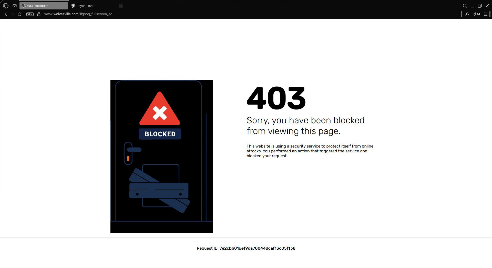

Browser
Wolvesville runs on both mobile and PC, but if you’re serious about botting, forget the Steam client or standard browsers. The move here is Opera GX
It’s not just for "gamers" it’s about the resource granularity. With GX Control, you can hard-cap RAM and CPU usage, ensuring your setup doesn't choke your system during long runs.
Bypassing IP Blocks & The Cloudflare Loophole
Bypassing IP Blocks
Don't bother with browser VPNs anymore. Wolvesville’s updated security catches those right after the verification handshake. Instead, use Cloudflare WARP. It’s the only reliable way to run multiple accounts across different windows without getting hit by IP rate limits.

403 block page served by Wolvesville when a browser VPN is detected during the connection handshakeThe Cloudflare Loophole
The "why" is the interesting part. It looks like Wolvesville uses Cloudflare’s own security suite (like Turnstile) for their backend. My theory is that because the traffic is coming from a Cloudflare IP, the system flags it as "trusted" and lets you skip the security verification entirely. It’s a massive logic gap in their new security layer.
 no verification check, cloudflare lies
no verification check, cloudflare lies
CPU Temperature Management and Memory Reduction
The real trick to keeping CPU temps low is simple: don't stay on the game tab.
If you switch from wolvesville.com to a blank.page, Opera GX unloads the game’s heavy assets but keeps the socket alive. You stay connected, but your CPU usage drops to near
zero. There’s a tiny 5 secs reload when you swap back.
For the RAM side, I use Easy Context Menu (Sordum) added to the system path. By calling a batch script every 15 minutes, you can force a memory flush, preventing the typical browser bloat that usually crashes long sessions.
EcMenu /Admin /ReduceMemory
Banning
How does Wolvesville handle bans these days? Honestly, I’m not sure how advanced their actual bot detection is, but my current setup doesn’t seem to trigger any "automated bot" flags. From my experience, the bans aren't coming from manual Guardian reviews they’re mostly from the game’s auto-ban system.
In short, you’ll likely get flagged if you’re reported too often for being AFK. The interesting part is the penalty: it seems to be capped at 3 days. Whether it’s your first time or your tenth, it stays at 3 days. It looks like a standard automated response for accounts that hit a certain threshold of reports.
Coding
I’m not going to spoon-feed the code here if you’re into botting, you probably know the basics anyway. But the logic is dead simple. You just need to detect the screen, find the buttons, and handle the tab swaps. I'll drop all the libaries below.